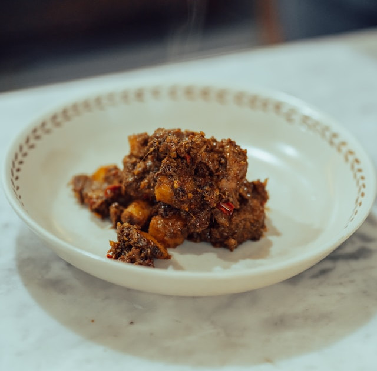

Rendang

Rendang, originating from the Minang region in West Sumatra, has gained
international acclaim for its distinctive savory flavor. This dish
consists of slow-cooked, braised beef pieces caramelized in coconut milk
and a rich blend of spices. Traditionally, Indonesians serve Rendang to
honor guests during festive occasions like wedding celebrations and
Eid-al-Fitr. While this tradition continues, Rendang is now widely
available in almost every Minang restaurant across Indonesia.
Preparing Rendang requires patience and diligence, but all the necessary
ingredients can be found at your local Asian markets. This unique dish
will certainly put your culinary skills to the test.
Ingredients
- 1 kg of beef
- 3 cups of coconut milk
- 3 stalks of lemongrass
- 4 kaffir lime leaves
Curry Paste
- 200 grams of galangal, cut into small pieces
- 4 large cloves of garlic, finely chopped
- 100 grams of shallot, finely chopped
- 100 grams of red chilies, finely chopped
- 2 tablespoons of coriander seeds
- ¼ teaspoon of turmeric powder
- 2.5 cm piece of fresh ginger
- Two pinches of salt
- 1 tablespoon of coconut sugar
- Two tablespoons of coconut oil
How to Make
- Prepare all the ingredients
- Cut the beef into 4-cm squares that are about ½ cm thick
- Blend all the curry paste ingredients together until smooth
-
Sauté the curry paste with coconut oil until fragrant and then pour
coconut milk into the wok
- Bash the lemongrass stalks and add to the wok
- Stir well and then add the beef
-
Cook over medium heat and bring the coconut milk to a boil before
reducing the heat to a simmer
-
Add a little water every once in a while whenever the stew is about to
dry
-
Cook until the meat is tender and the color turns dark brown (estimated
time: 3 hours)
- Rendang is ready to be served.
Reference:
Indonesia Travel (Wonderful Indonesia), AI Tools